VIAJES
MEDELLÍN
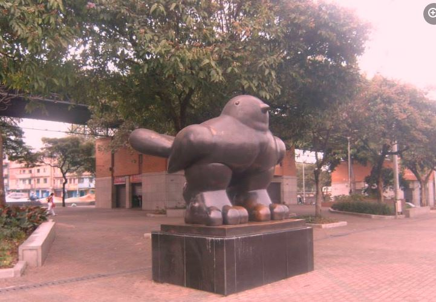
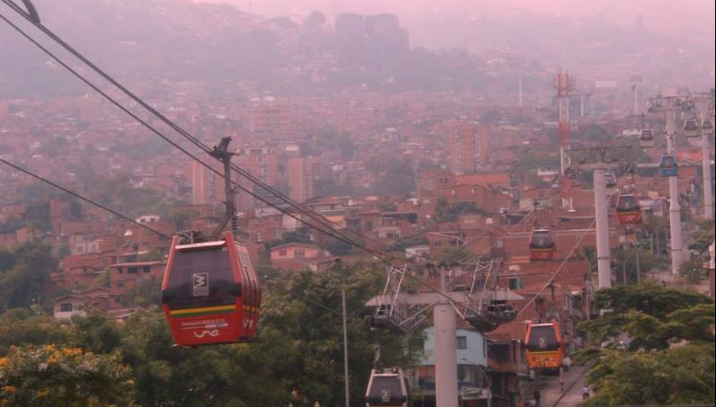
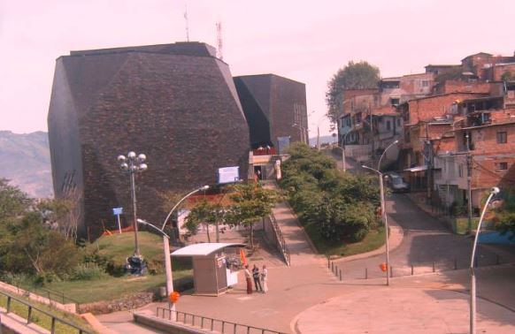
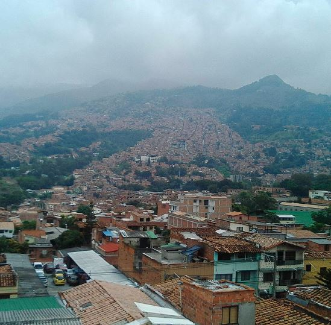
Medellín encanta por su privilegiado clima. Goza de una altura que le per- mite no ser muy fría, ni
muy caliente, y su clima tropical hace de este destino sede de reuniones y congresos de talla mundial en
cualquier momento del año. Clima tropical que es común encontrarlo también en el trato de los
colombianos, sobre todo los paisas siempre amables, cálidos y colaboradores; así como en la música
urbana y el reggeaton, que han empezado a crear nuevas industrias creativas en la ciudad muy atractivas
para nuevos visitantes.
SANTA MARTA
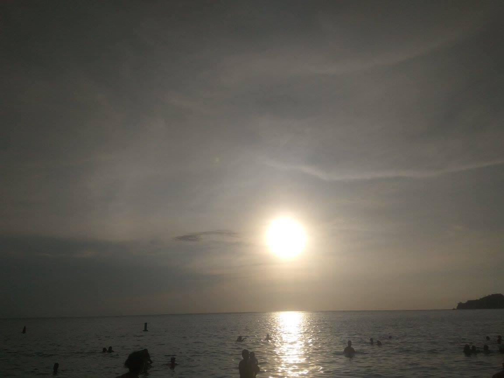
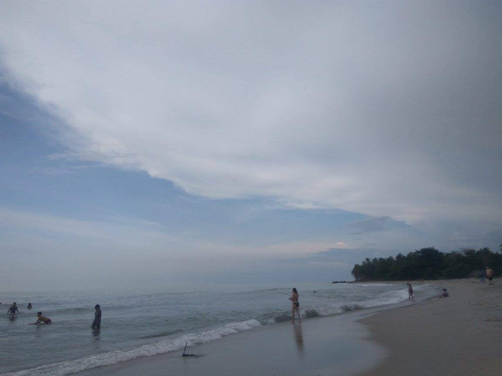
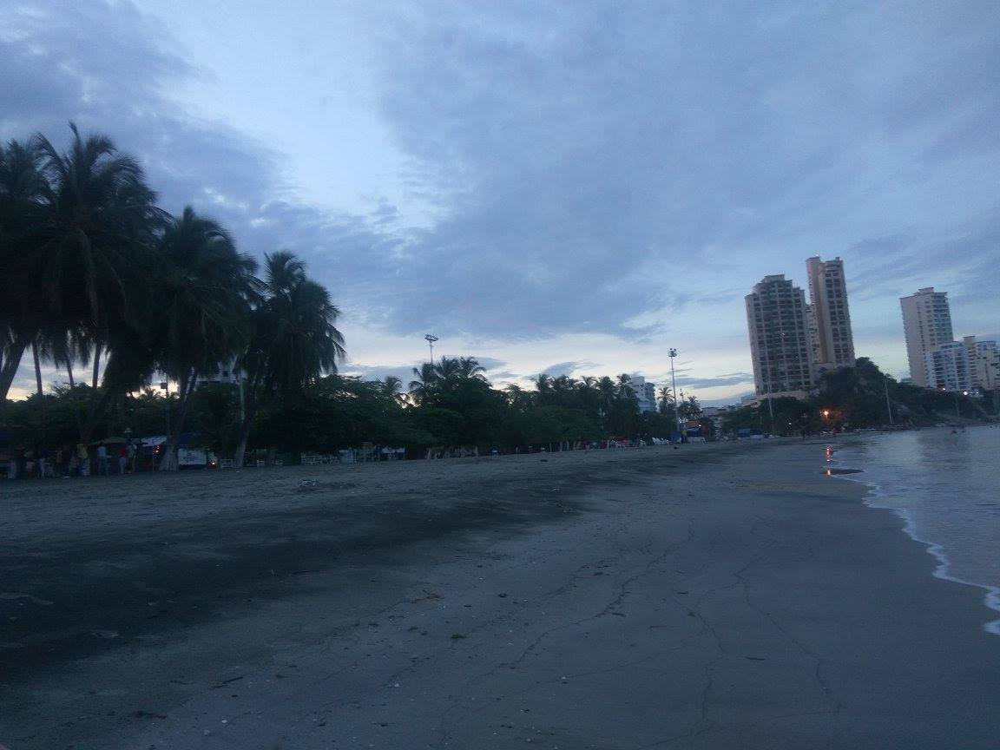
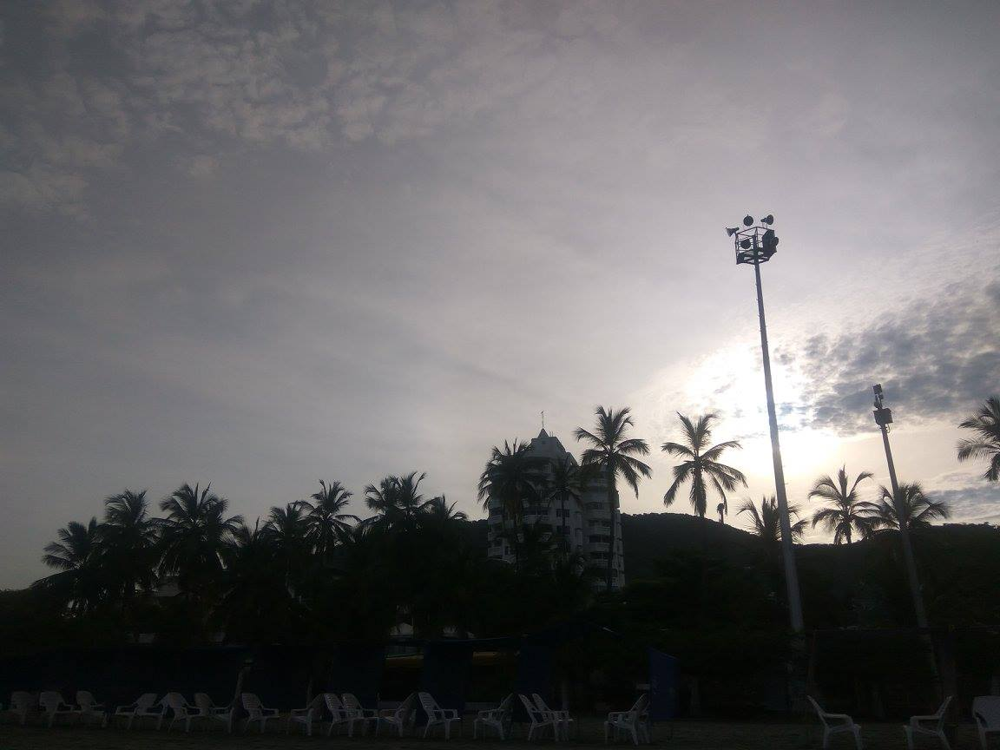
Villavicencio es que su enfoque turístico, más allá del ambiente de balneario y
fiesta propios de cualquier ciudad cálida, es una ciudad experiencial y muy
arraigada a sus tradiciones culturales. Al entrar a una tienda de artesanías, un
local de comercio casual, un restaurante o una panadería a comer el tradicional
pan de arroz y masato (también a base de arroz), lo más probable es que esté
sonando música llanera.
La música es motivo de orgullo para esta región, evidencia de esto son los
diversos monumentos ubicados en las avenidas y parques principales que rescatan
la música tradicional de los llanos, sus conjuntos y sus instrumentos insignia:
el arpa, las maracas y el cuatro. Cabe destacar que en 2017 los cantos de
vaquería fueron declarados patrimonio inmaterial de la humanidad por la UNESCO.
A continuación, pueden encontrar un audio con paisajes sonoros de algunos
lugares turísticos y rurales de Villavicencio, así como un canto de vaquería
interpretado en medio de una cabalgata por Ramón Jaimes en la voz y el cuatro.
Para cerrar, un fragmento de un poema cantado de Pedro Nel Suárez, ganador del
concurso internacional del poema llanero, acompañado por Jaimes en el cuatro.
VILLAVICENCIO
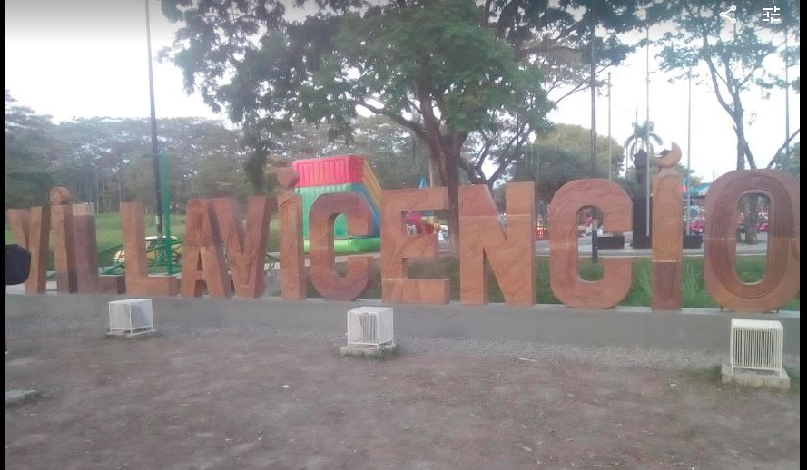
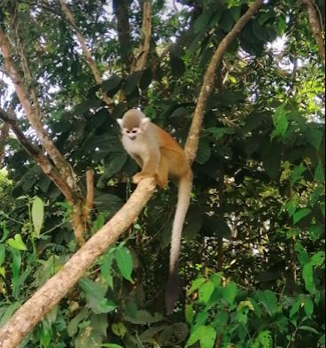
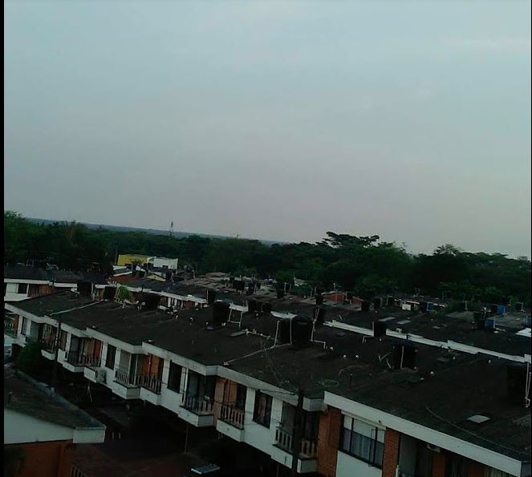
Estos son los lugares más visitados por los turistas, y no es para menos, sus
playas y escenarios singulares en pleno Caribe de Colombia conforman un paisaje
perfecto para el disfrute de las vacaciones.
El Rodadero es el destino preferido por quienes visitan Santa Marta, por su
suave arena blanca, un mar tranquilo para la práctica de los deportes acuáticos
y además está rodeado por hoteles, restaurantes y discotecas de la ciudad.
Playa Blanca es un sitio tranquilo rodeado de una barrera de montaña, que hace
parte del Parque Tayrona, a 10 minutos en lancha desde el Rodadero. Caminar,
nadar, tomar el sol y probar la gastronomía local, es el plan perfecto en este
lugar paradisíaco.
El Acuario es la oportunidad para ver de cerca algunas criaturas del mar, como
tiburones, delfines, tortugas, aves marinas, además cuenta con un museo en donde
se encuentra especies disecadas, elementos náuticos y una colección prehispánica
de los Tayronas.
Ir a enlaces de interés
Ir a mis imagenes